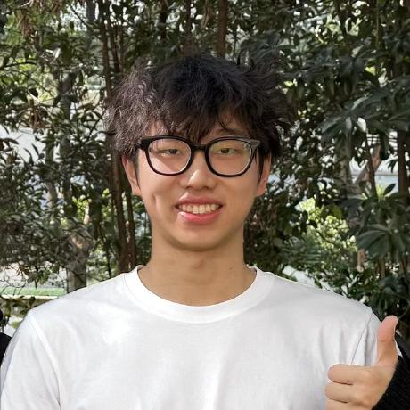
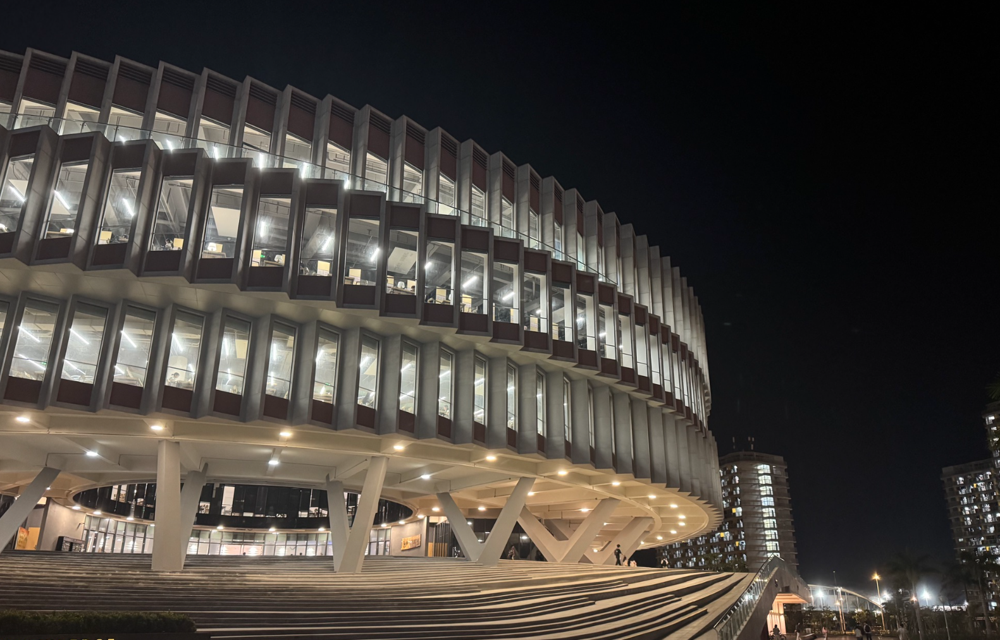

一种新型液冷接口坞
段浩 · 实用新型专利 · 申请号 202420912353.8 · 2024-12-27
Artificial Intelligence
I am a graduate student at Shantou University. My research interests center on how robots learn to move and adapt to their surroundings.

National Scholarship and National Encouragement Scholarship
First Prize, 15th National Finals
Bronze Award, 20th edition
Second Prize, 16th National Finals
First inventor on one invention patent and one utility model patent
Learning control policies that adapt to new tasks and environments.
Developing stable, adaptable control for legged robots on uneven terrain.
段浩 · 实用新型专利 · 申请号 202420912353.8 · 2024-12-27
